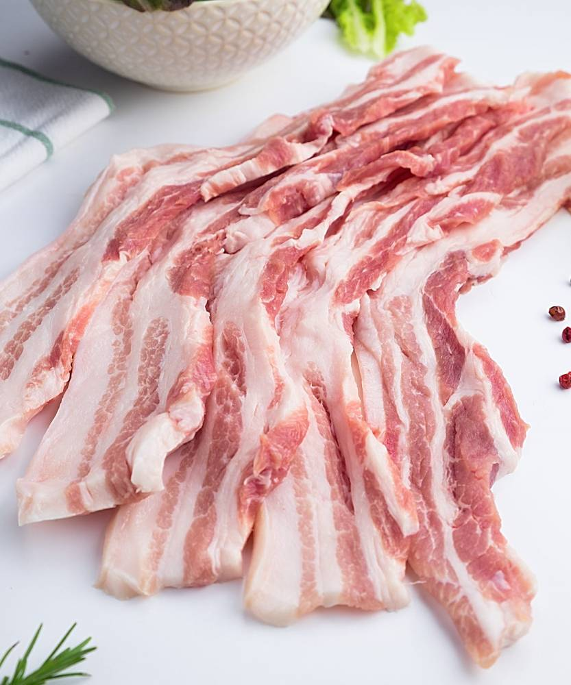
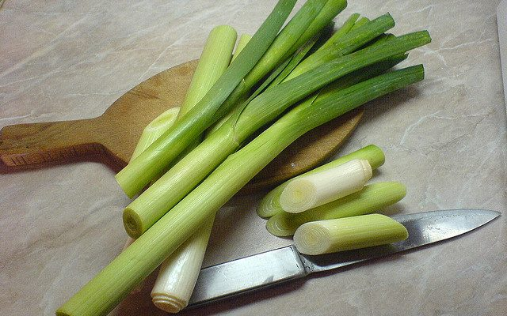
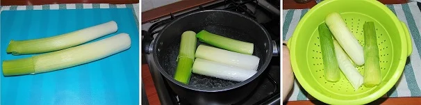
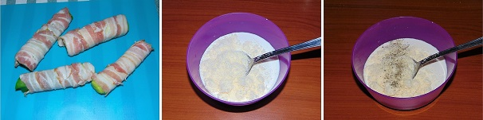
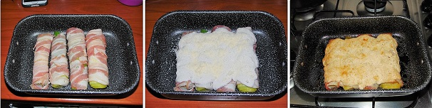
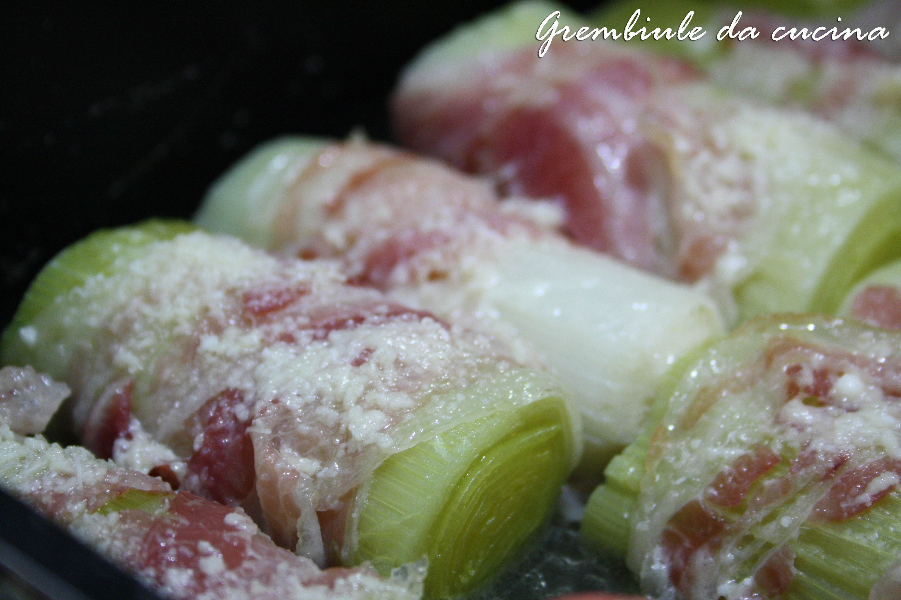

Gli involtini di porri e pancetta sono una delizia realizzata con pochissimi ingredienti tutti
saporiti
e golosi che danno vita ad una pietanza gustosa ma delicata ottima come secondo piatto o in piccolo
anche con antipasto caldo. Questi fantastici involtini sono pratici e soprattutto veloci da fare
anche
quando si ha pochissimo tempo, ancora più buoni se fatti con della besciamella fatta in casa con
tutti
ingredienti di qualità. Gli involtini di porri e pancetta sono assolutamente da gustare caldi per
l’aromaticità degli ingredienti che li compongono, ma prepariamoli seguendo la ricetta riportata di
seguito.


Ingredienti
2porri
8 fette di pancetta affumicata
100g di besciamella
80g di grana padano grattuggiato
q.b. di sale
q.b. di pepe
Preparazione
Come preparare gli involtini di porro e pancetta
Pulite i porri eliminando la parte verde e dura ed anche un paio di foglie esterne fino ad avere
un
prodotto tenero. Lavateli accuratamente sotto acqua fredda corrente e dopo di che dividete ogni
porro o metà o ancora in più parti a seconda dei gusti. Portate a bollore abbondante acqua con
del
sale e cuocete al suo interno i porri per circa 5 minuti, in modo da ammorbidirli ed eliminare
il
gusto forte. Una volta pronti, scolateli e lasciateli freddare.

Avvolgete ogni porro con della pancetta affumicata cercando di coprirli uniformemente. Versate
in una ciotola la besciamella fredda ed unite ad essa una metà di grana padano grattugiano ed un
pizzico di pepe nero ed amalgamate tutti gli ingredienti tra loro.

Sporcate il fondo di una teglia con la besciamella ed adagiatevi sopra gli involtini di porro e
pancetta, ricopriteli con la rimanente besciamella ed il grana padano grattugiato. Accendete il
forno statico ad una temperatura di 180 gradi quindi, anche a freddo, inserite la teglia con i
porri ben coperta da carta stagnola e cucinateli fino a che, infilzandoli non risulteranno
morbidi. Togliete la carta stagnola e gratinate i porri per qualche minuto fino a doratura.

Ecco pronti gli involtini di porri e pancetta.

Trucchi e consigli
Se non avete della besciamella e non vi va di farla, in alternativa utilizzate della panna da
cucina; unitela a freddo con un po’ di farina, sale, pepe e noce moscata e grana padano
grattugiato, in forno si addenserà come una besciamella.
Se preferite realizzare deli stuzzichini, tagliate i porri in pezzi più o meno grandi tre
centimetri e preparateli allo stesso modo.